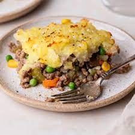

Shepherd's Pie

Description
A classic recipe, this is sure to warm you up on cold winter days!
Can be made with a variety of ingredients, here is just one example.
Ingredients
- Potatoes
- Carrots
- Minced beef or lamb
Steps
- Boil potatoes and carrots.
- Fry minced beef/lamb.
- Mix carrots and mince in a glass dish.Place mashed potatoes in a layer over the mince.